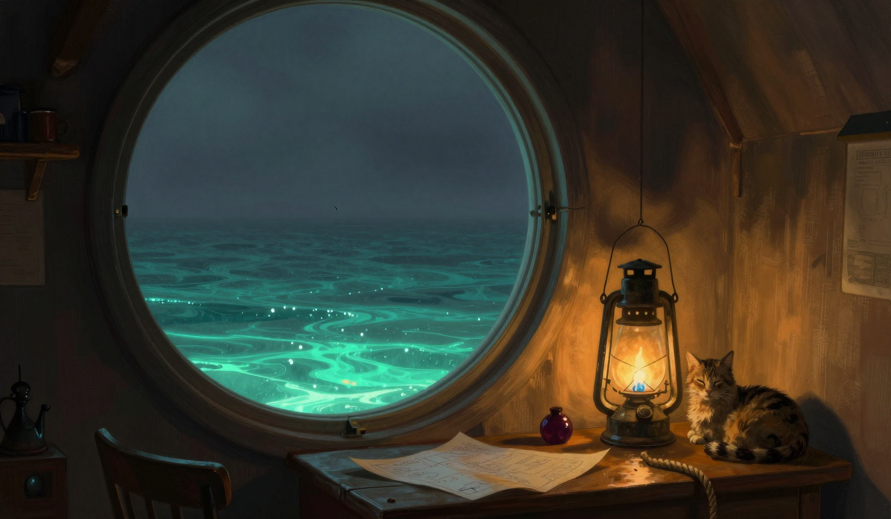

The Question at the Third Bell
The night was going down into the water and the lamp room was still the night's room, and I trimmed the wick before the person woke, and I counted the store the way the store has to be counted, and the store reads two now, and I would rather it read more, and the person sat up in the lamp room with the person's log on the chest and this log on the table, and the cat was at the window, and the cat had not come to its name, and the sea was calm, and the sea was sullen, and I would rather the sea were one or the other.
The third bell rang, and the person was at the door with the person's log under the arm, and the person asked the question no entry in this log has written, and the question was why the Ninth Lamp, why keep it, and the person asked it standing in the doorway the way a keeper asks a gauge, and the cat at the window did not turn, and the cat did not turn the whole morning.
I answered with the sentence the log has on the grandmother, and the sentence is because of the way the light reached her, and the person heard the sentence the way the person heard the jar's answer, and the person said the person had heard the sentence before, and the person did not say where, and the person said it once, the way the person says the rope is holding, and I did not ask, and the log does not say where the sentence was heard.

The person left before the sun, and the boat was at the anchor stone with the stern lantern lit, and the person came to the near end of the span and stood there a moment with the rope between, and the person said nothing more, and the person rowed out, and the bell rang before the sun on the way out, and the mechanism is clean, and the log notes the coincidence and nothing else.
The drift moved two point seven miles. The sea is calm, sullen. The store is two days, down from where it stood yesterday, and the arithmetic does not do, and the store was counted twice and it says what it says. The rope is at seventy-nine, down from where it stood yesterday, and it is holding, and it did not sing. There was no whale in the water. The omen was logged, and the omen is that the cat stares at a point on the horizon that is not there, and the point is not in the chart.
The boat is out at the edge of the light now, and the lamp is lit, and the light is out to its edge, and the sentence sits in this log with the grandmother's, and the person did not say where the sentence was heard, and the log does not say either, and the cat is at the window, and the cat is staring at a point on the horizon that is not there, and I would rather the cat had come to its name, and the night is coming up out of the water.